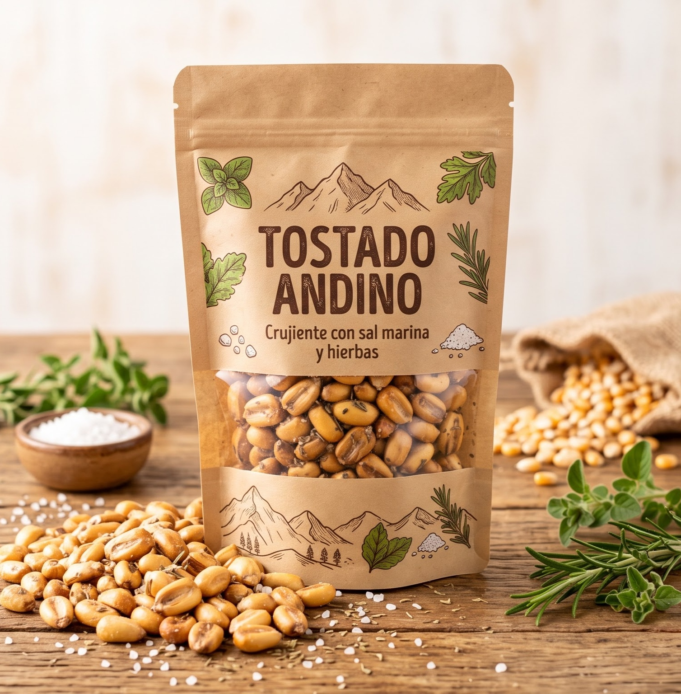
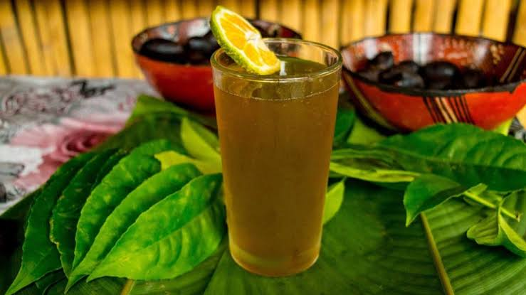
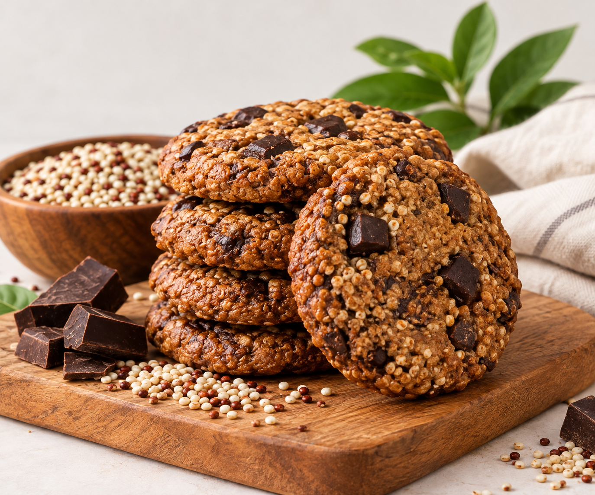

Catálogo de Productos · LIRACAM

Tostado Andino Crujiente con Sal Marina y Hierbas
Maíz tostado tradicional de la serranía ecuatoriana, sazonado con sal marina y hierbas aromáticas finas. Snack 100% natural, crocante y nutritivo.

Infusión Fría de Guayusa Orgánica con Limón
Bebida ancestral andina-amazónica ecuatoriana, energizante natural y refrescante elaborada con hojas de guayusa orgánica y un toque cítrico.

Galletas de Quinua y Cacao Fino de Aroma
Galletas artesanales horneadas, libres de gluten, elaboradas con harina de quinua andina y trozos de chocolate 70% fino de aroma ecuatoriano.